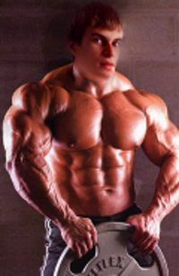

Bodybuilding.ca

Une salle faite pour vous
Notre entraineur à une salle d'éntrainement qui conviens à tous

Il vous prépare à toute éventualité
Si vous pensez ne pas être prêt pour votre prochain défi, vous êtes au bon endroit!

Just do it!

Entrainement personnalié
Vous avez besoin de vous entraîner pour un prochain défi? Vous êtes au bon endroit. Sur ce site vous pouvez prendre rendez-vous avec un des meilleurs entraineurs du Quebec. Que votre but soit de devenir bodybuiler ou athlète, Simon LeDim peut vous aider! Celui-ci vous construira un programme spécialisé pour vous. De plus, il vous aidera à avoir une bonne nutrition avec des plats aussi santé que excelents et il vous reccomandera de bons supplements alimentaires pour prendre ou perdre de la masse. En vous entraînant avec lui, vous aurrez accès à son magnifique gym privé dans lequel vous pourrez vous dépasser.
Un entraîneur qui est là pour vous
Simon LeDim est un entraineur profesionel depuis 1992. Il participe à des competitions de bodybuilding depuis bien longtemps et il entraine des personnes comme vous pour tout ce dont vous avez de besoin. Il a entrainé des athlètes connus modialement, dont des athlètes olympiques, des athlètes de boxe, etc. Mais cet entraîneur ne s'arrête pas là. Il aide des gens comme vous à s'entraîner pour accomplir vos rêves. Par exemple, il vous aidera à vous préparer pour des tests physiques comme :
- Test d'aptitudes physiques pour pompiers
- Test d'aptitudes physiques pour patrouille-gendarmerie
- Test d'aptitudes physiques pour ambulanciers
- Test d'aptitudes physiques pour les Forces Armée de Terre
Simon LeDim est reconnu pour avoir entrainé beaucoup d'athlètes profesionels, tout comme Eugenie Bouchard. Cette jeune athlète fut entrainé en endurence et en force par M. LeDim en personne. Il a travaillé avec elle pendant quelques mois avant qu'elle ne change d'entraineur.